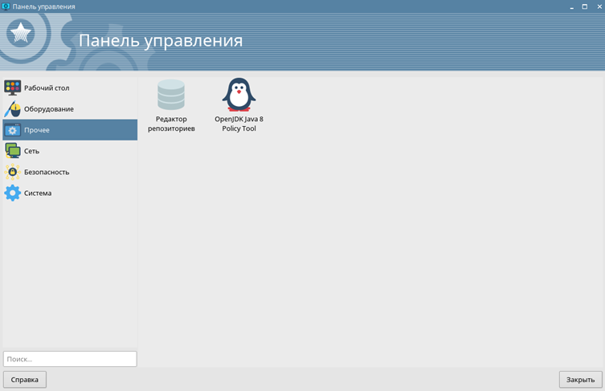
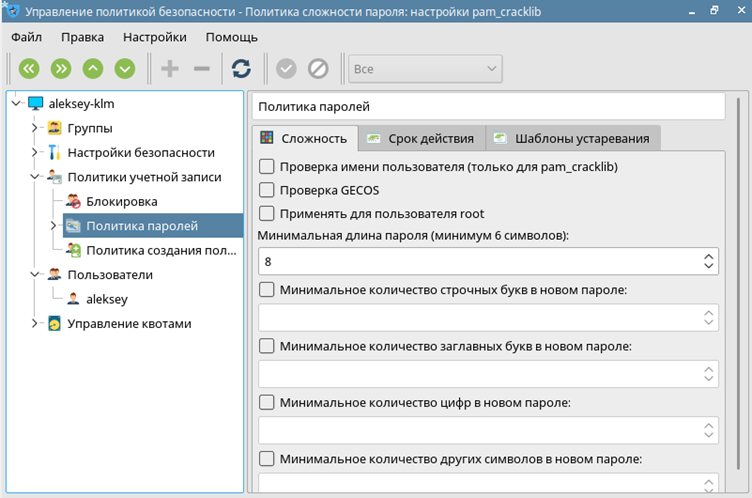
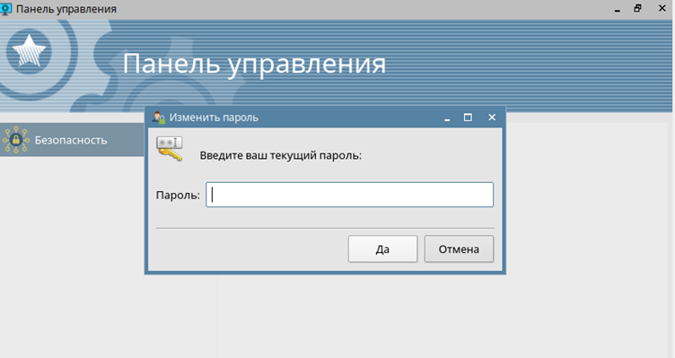

МИНИСТЕРСТВО ЦИФРОВОГО РАЗВИТИЯ СВЯЗИ И МАССОВЫХ КОММУНИКАЦИЙ РОССИЙСКОЙ ФЕДЕРАЦИИ
ФЕДЕРАЛЬНОЕ ГОСУДАРСТВЕННОЕ БЮДЖЕТНОЕ ОБРАЗОВАТЕЛЬНОЕ УЧРЕЖДЕНИЕ ВЫСШЕГО ОБРАЗОВАНИЯ
«САНКТ-ПЕТЕРБУРГСКИЙ ГОСУДАРСТВЕННЫЙ УНИВЕРСИТЕТ ТЕЛЕКОММУНИКАЦИЙ ИМ. ПРОФ. М.А. БОНЧ-БРУЕВИЧА»
(СПбГУТ)
Факультет информационных систем и технологий
Кафедра безопасности информационных систем
Лабораторная работа №6
по дисциплине: Архитектура информационных систем
на тему: «Изучение утилит администрирование в ОС «Астра»»
Выполнил:
студент гр. ИСТ-921
Клименко А.А.
Принял:
к.т.н., доцент кафедры ИКД
Громов В.В.
г. Санкт-Петербург
2022 г.
Цель работы: изучить графические утилиты администрирования и найти их аналоги в терминале.
Ход работы
1. Утилиты администрирования ОС Astra Linux
На рисунке 1 представлена панель управления Astra Linux, на которой можно найти все предустановленные и системные утилиты.

Рисунок 1 – меню утилит
2. Выполнение утилит и команд терминала
Редактор репозитория служит для управления репозиториями в системе. Рисунок 2 представлен пример интерфейса создания репозитория. Рисунок 3 - установка репозитория с помощью команд терминала.

Рисунок 2 – утилита редактирования репозитория
Рисунок 3 – установка репозитория через терминал
Утилита архивирования ark. На рисунке 4 представлен процесс архивирования в zip, а на рисунке 6 архивирование через терминал.
Рисунок 4 – создания архива gzip
Рисунок 5 – результат работы утилиты архивирования
Рисунок 6 – создание архива в терминале
В ОС «Астра» предустановлена утилита Midnight Commander. На рисунке 6 представлена работа Midnight Commander
Рисунок 7 – интерфейс Midnight Commander
Менеджер пакетов Synaptics. Аналог Synaptics в терминале - apt. На рисунке 9 представлен пример работы в synaptic, а на рисунке 8 то же самое, только через терминал.
Рисунок 8 – установка vim через Synaptic
Рисунок 9 – установка через терминал
Сетевая утилита. Рисунок 10 представлен интерфейс графической утилиты, рисунок 11 команды терминала, реализующие аналогичный функционал.
Рисунок 10 – утилита с информацией о сети
Рисунок 11– информация о сети через терминал
Утилита для создания групп. Рисунок 13 представлен утилита для создания группы, рисунок 12 – создание группы с помощью терминала.
Рисунок 12 – создание группы через GUI
Рисунок 13 – создание группы через терминал
Утилита для создания пользователей аналогичная, как и у создания групп. Рисунок 14 представлен утилита для создания нового пользователя, рисунок 15 – создание пользователя с помощью терминала.
Рисунок 14 – создание пользователей через утилиту
Рисунок 15 – создание пользователя через терминал
Утилита по изменению политик паролей. На рисунке 16 представлена утилита для редактирования политик, рисунок 17 – редактирование через терминал (политика паролей, чтобы требовать новый пароль каждые 90 дней.).

Рисунок 16 – изменение политики через интерфейс
Рисунок 17 – Изменение политики через терминал
Еще одна утилита – изменение пароля. На рисунке 18 представлен - способ через графический интерфейс, на рисунке 19 – через терминал.

Рисунок 18 – Утилита изменения пароля
Рисунок 19 – изменения пароля через терминал
Вывод
В данной работе было проведено сравнение графического интерфейса администрирования и администрирования через терминал. Таким образом можно сделать вывод что данные виды взаимозаменяемы, однако работа через терминал ведется быстрее при наличии навыков. Для обычного пользователя в домашних условиях проще будет работать через графический интерфейс.